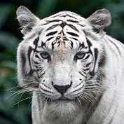
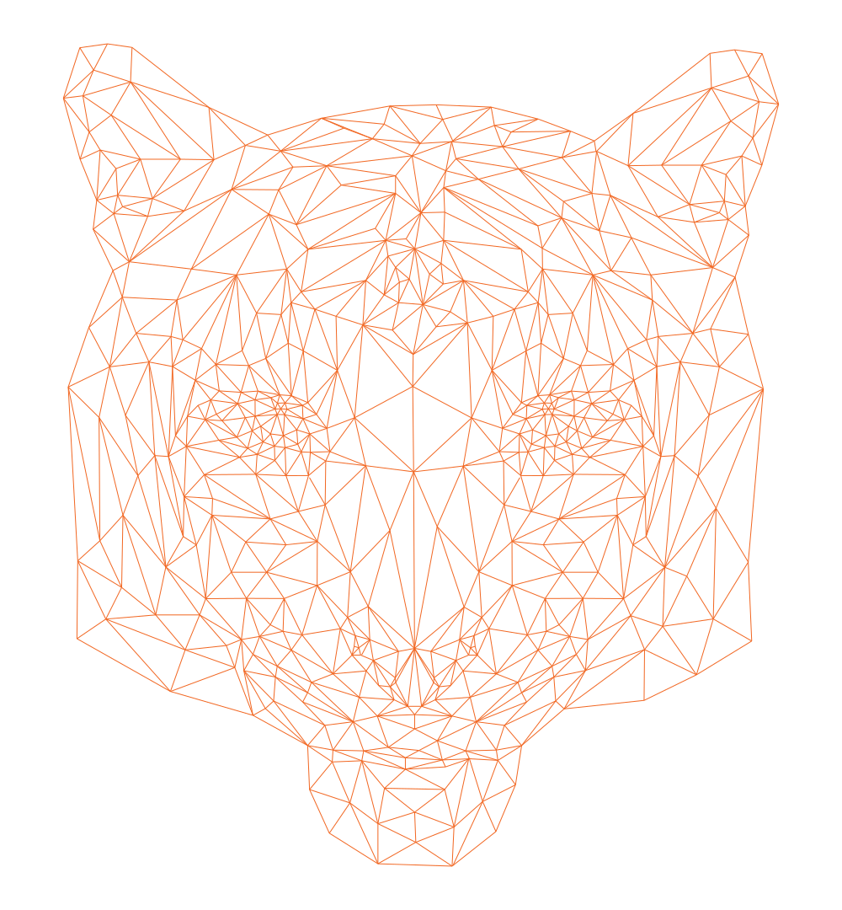
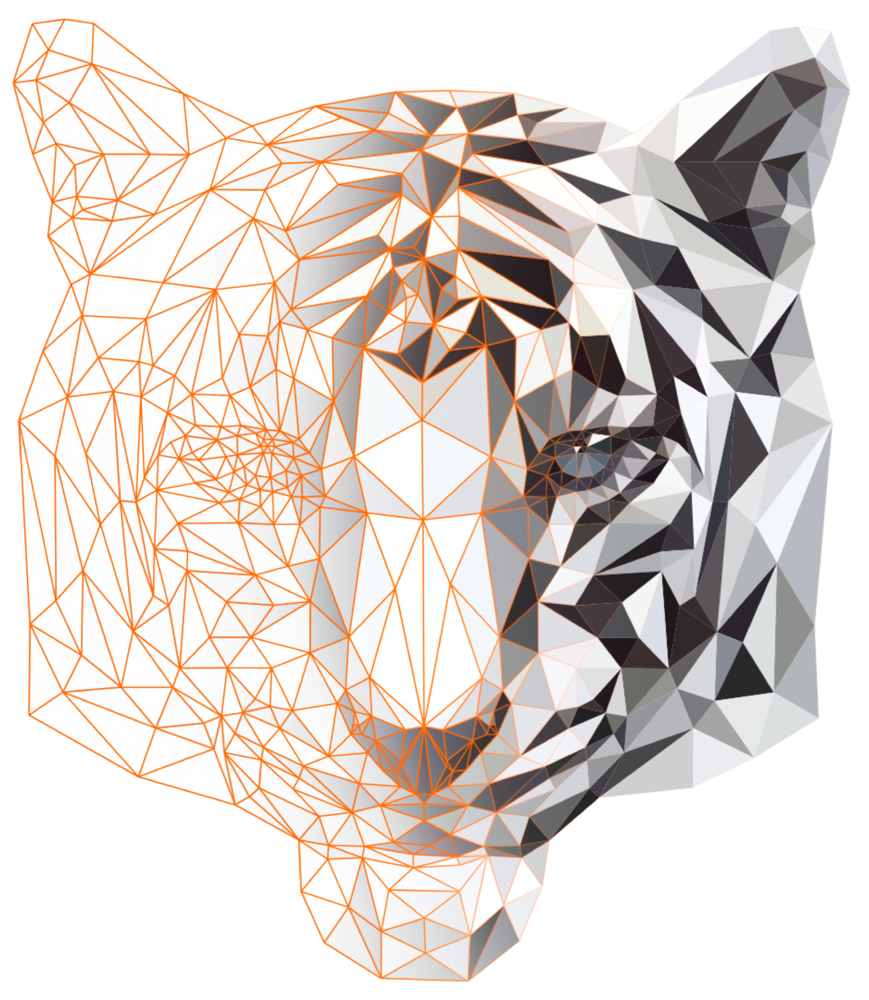
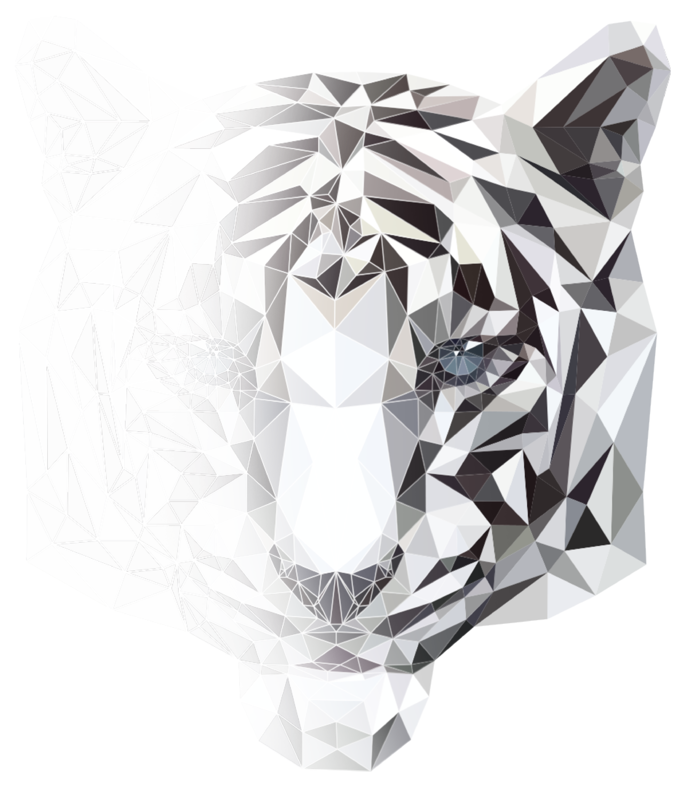
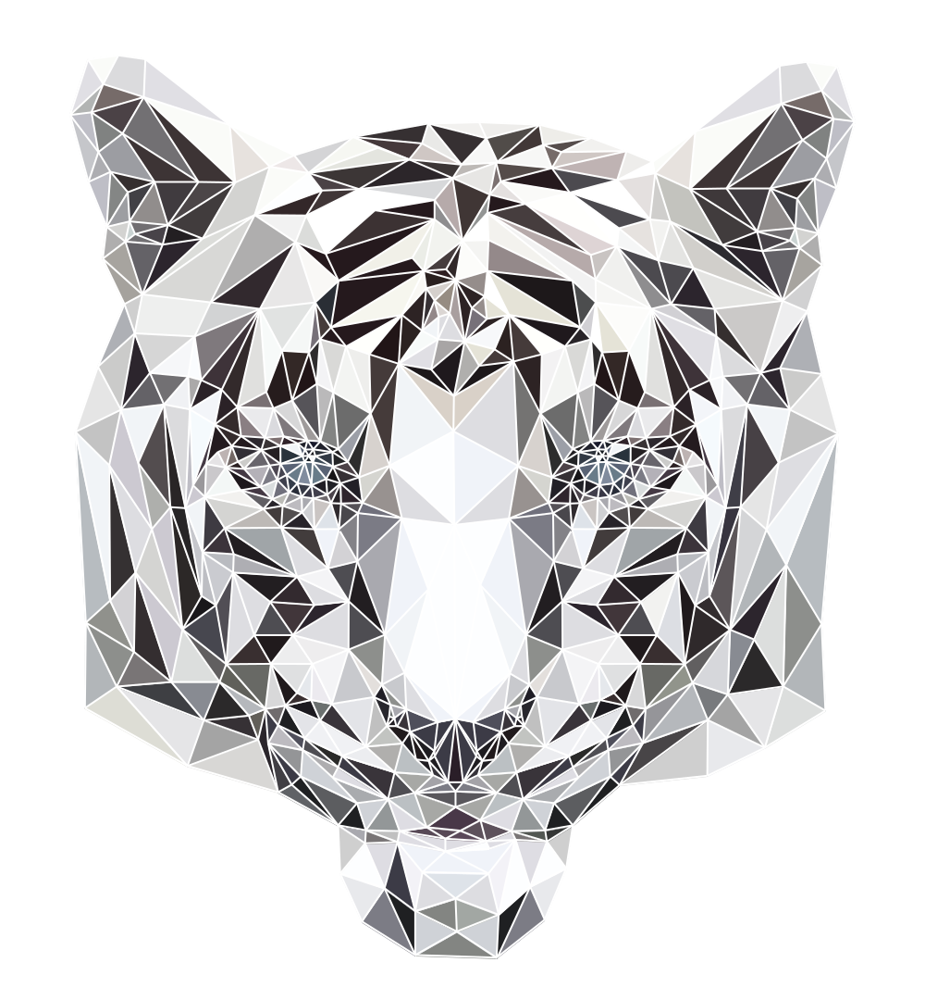
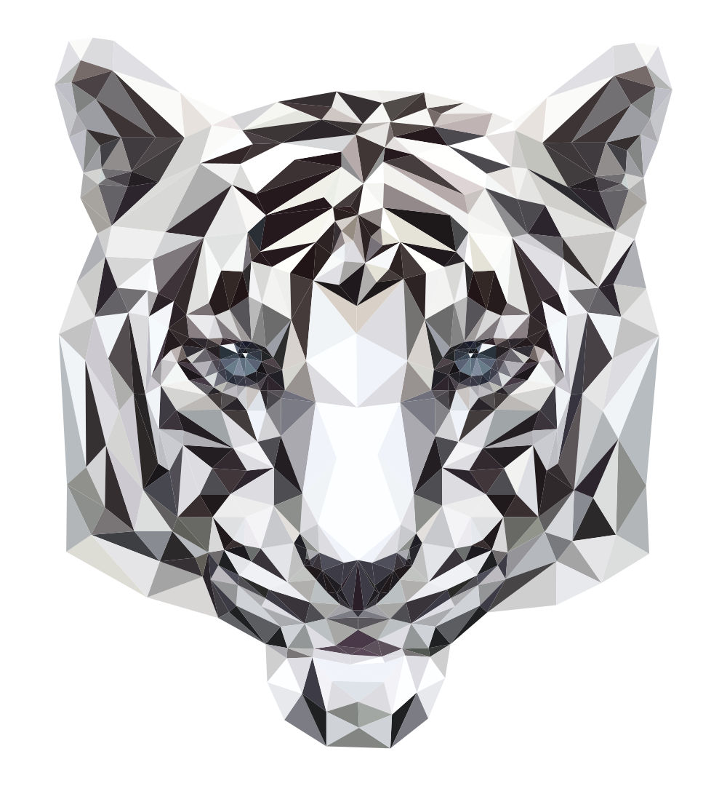
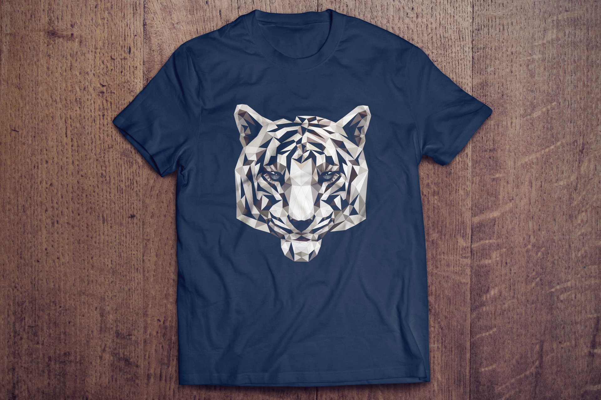

Estampa Tigre Branco para camisetas
Produzida em Low Poly Art
Produzida em Low Poly Art
Processo de criação de estampa de camiseta no estilo Low Poly, que tem como meta produzir imagens usando polígonos com o menor número de lados, no caso triângulos, como como teste para produção posterior de uma linha de camisetas, onde foi simulada a aplicação da estampa em uma camiseta de fundo azul.
O processo de construção de uma arte poligonal pode ser dividida em 5 etapas, sendo elas as seguintes: busca de referência, construção da malha, escolha e aplicação de cores, finalização e exportação do arquivo para a mídia escolhida, nesse caso a estampa.
Primeiro passo - Escolha da Referência

Segundo passo - Construção da malha

Terceiro passo - Escolha e aplicação de cor


Quarto passo - Finalização


Quarto passo - Finalização
